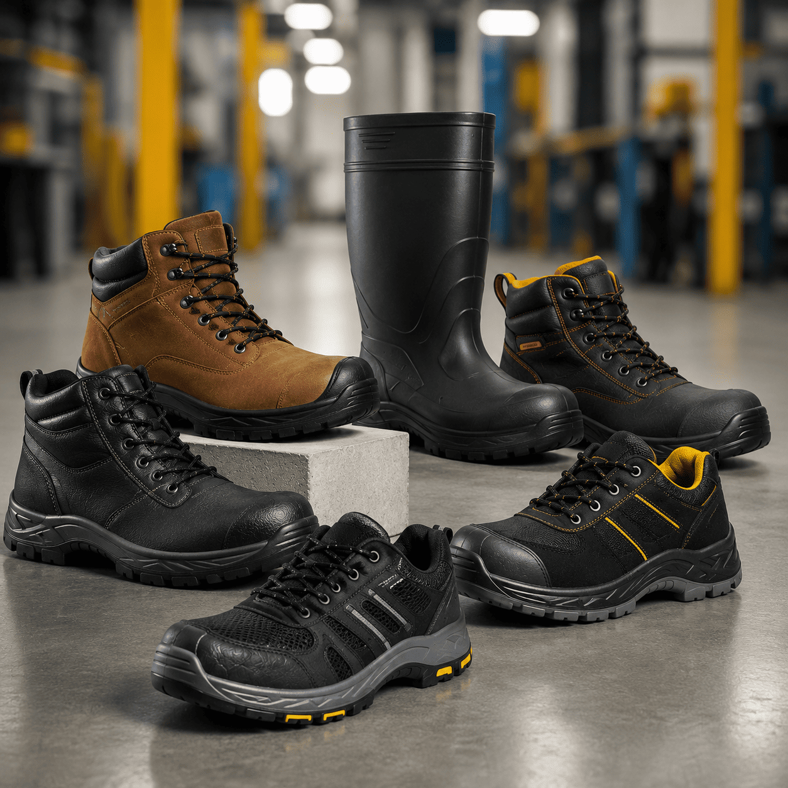
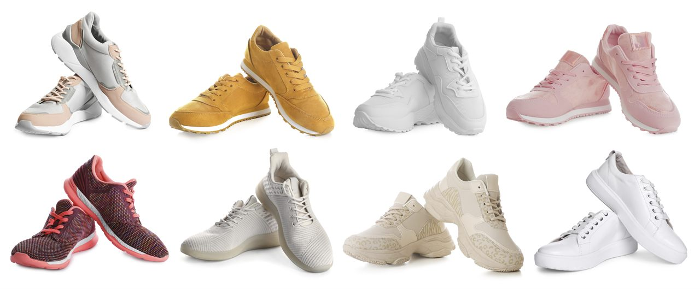
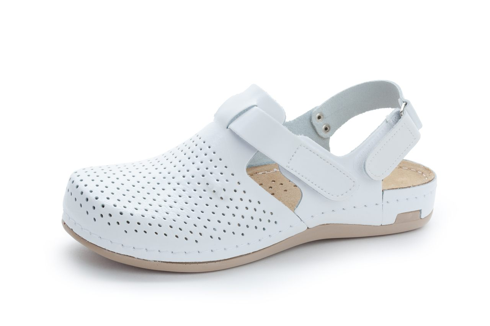

Calzado de seguridad y dieléctrico
Botas con puntera de protección y referencias dieléctricas para reducir riesgos de impacto y eléctricos.
Botas industriales, calzado dieléctrico y líneas de protección para pies diseñadas para reducir riesgos laborales y mejorar el desempeño del trabajador.

PLATIM ofrece calzado de dotación personal para empresas industriales, comerciales y de servicios, brindando calidad y entrega oportuna para que los trabajadores realicen sus labores de forma segura, prevengan riesgos laborales y mantengan un alto desempeño.
Manejamos distintos tipos de calzado —de seguridad y dieléctrico, impermeable, de aseo, institucional y para hospitales— con referencias de puntera de protección y suela antideslizante, para que elijas el adecuado según la labor y el riesgo de cada operación.
Elige el calzado adecuado según la labor de tu equipo: protección industrial, resistencia al agua, aseo, presentación institucional y sector salud.
Botas con puntera de protección y referencias dieléctricas para reducir riesgos de impacto y eléctricos.

Calzado resistente al agua, antideslizante y fácil de lavar para exteriores, limpieza y ambientes húmedos.

Calzado de dotación con buena presentación para personal administrativo, comercial y de atención.

Calzado cómodo, antideslizante y fácil de higienizar para el sector salud.
Las características pueden variar según la referencia. A continuación, atributos frecuentes en nuestras líneas de calzado de seguridad.
Las características técnicas pueden variar según referencia. Solicita la ficha técnica antes de comprar.
Información de referencia. Confirma siempre la ficha técnica de cada referencia antes de comprar.
Manejamos botas industriales, dieléctricas, con puntera de seguridad, resistentes al desgaste y con suela antideslizante, en líneas vulcanizada, cementada e inyección.
Sí. Contamos con referencias dieléctricas pensadas para reducir riesgos eléctricos. Solicita la ficha técnica de la referencia que necesites para confirmar especificaciones.
Trabajamos tallas francesas, habitualmente de la 36 a la 44 según la referencia. Indícanos las tallas requeridas al cotizar.
Varias referencias incluyen puntera de seguridad en material composite (no metálica), recubierta con suplemento textil para mayor confort. Confirma la referencia específica.
Por supuesto. Recomendamos solicitar la ficha técnica antes de comprar, ya que las características pueden variar según la referencia.
Sí. Ofrecemos calzado de dotación para empresas industriales, comerciales y de servicios, con entrega oportuna según lo acordado.
Sí. El calzado de seguridad es un Elemento de Protección Personal: según el Decreto 1072 de 2015, el empleador debe suministrarlo sin costo cuando la labor implica riesgo para los pies. Además, el calzado de labor hace parte de la dotación obligatoria (artículo 230 del Código Sustantivo del Trabajo) para quienes devengan hasta dos salarios mínimos.
Cuando existe riesgo de impacto, perforación, caída de objetos, riesgo eléctrico o superficies resbaladizas. El Sistema de Gestión de Seguridad y Salud en el Trabajo (Resolución 0312 de 2019) exige entregar el calzado adecuado según el riesgo de cada puesto.
Indícanos líneas, tallas y cantidades y te enviamos una propuesta con ficha técnica.
Gracias por escribirnos. Un asesor de PLATIM te contactará pronto con tu cotización de calzado.